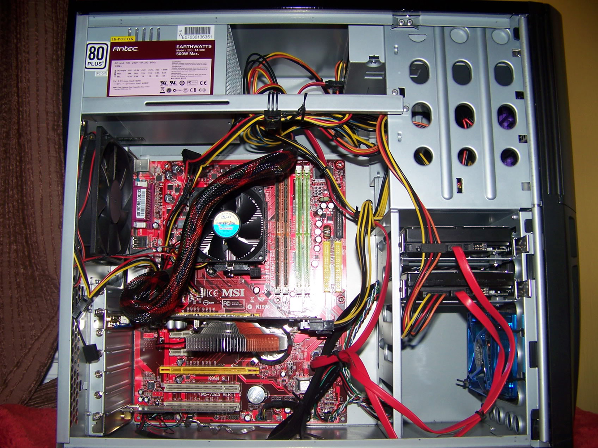
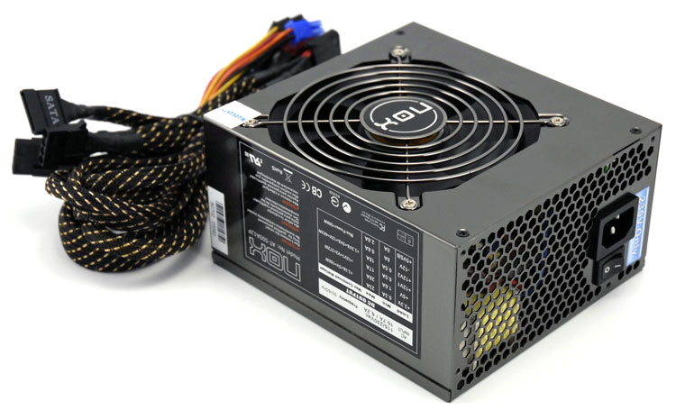
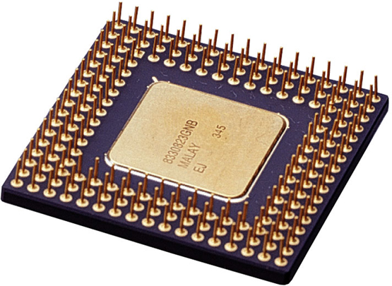

Dentro de cualquier ordenador podremos distinguir dos tipos de componentes:
El Ordenador
3. Hardware: Unidad principal del sistema
Actividad
Hardware: Parte física del ordenador. Está formado por todos los componentes que integran la máquina.
Software: Está formada por todos los programas que utiliza el ordenador, es decir, los sistemas de instrucciones que hacen posible su funcionamiento.
En este apartado del tema estudiaremos los componentes hardware del ordenador. A su vez dentro de ellos podemos distinguir dos grupos de elementos.
- Componentes de la unidad central del sistema: Llamaremos unidad central de sistema a la caja que contiene los elementos básicos del ordenador.
- Periféricos: Componentes externos que conectados a la unidad central de proceso permiten introducir o mostrar información en la máquina.
|  |
| Imagen 15. Recurso propio. |
Los perífericos serán estudiados en un punto posterior. De momento vamos a centrarnos en los componentes de la unidad central del sistema. Normalmente esta unidad está contenida en el interior de una caja, estando los componentes sujetos por un bastidor metálico y protegidos del exterior por una carcasa.
Tomando como referencia un ordenador de sobremesa y abriendo esa carcasa nos encontraremos con algo similar a la imagen de la derecha:
Dentro de esta caja hay múliples componentes. Vamos a fijar nuestra atención en los siguientes:
- La fuente de alimentación
- Los ventiladores
- Placa base
- Microprocesador
- Memoria base o principal
- Ranuras de expansión
- Puertos
- Discos duros
- La fuente de alimentación
Es un transformador eléctrico que regula la electricidad que va a utilizar el ordenador. Convierte la corriente alterna que suministra la red eléctrica en bajos voltajes de corriente continua adecuados para el funcionamiento del ordenador (habitualmente 3,3 voltios, 5 voltios y 12 voltios). Los dos primeros voltajes son los que utilizan ordinariamente los circuitos digitales, mientras que 12 voltios es el voltaje que se usa para poner en marcha los motores del disco duro y del ventilador.
|  |
| Imagen 16. pccomponentes. Copyright. |
La caja que contiene los componentes de la fuente de alimentación está provista de un ventilador que elimina el calor generado en el proceso de transformación.
-
Los ventiladores
Imagen 17. letheonline. Copyright
Junto con el ventilador de la fuente de alimentación nos encontramos otros asociados a elementos específicos que tienen por misión sacar fuera de la unidad del sistema el calor generado por el funcionamiento.
El microprocesador es el componente principal y que más calor genera del sistema, por lo que siempre dispondrá de un ventilador situado sobre él. Normalmente y tal y como se puede ver en la imagen el ventilador no está en contacto directo con el procesador sino que está situado encima de unas láminas metálicas que también favorecen la disipación de calor.
Otros elementos que suelen tener un ventilador asociado son las tarjetas de video, en muchos casos el ventilador suele estar integrado en la propia tarjeta.
- El microprocesador
|  |
| Imagen 18. andandara. Copyright. |
Es el "cerebro" del ordenador. Está formado por un chip de silicio que contiene un procesador microscópico. El procesador es el encargado de realizar las operaciones aritméticas y comparaciones lógicas que van a hacer funcionar a nuestra máquina. La velocidad de trabajo del microprocesador es controlada por medio de un reloj. El funcionamiento del procesador condiciona no sólo la velocidad, sino también la fiabilidad de las operaciones que efectuemos en nuestro ordenador.
Junto al microprocesador principal un ordenador suele contener otros procesadores especializados en realizar ciertas tareas como son los coprocesadores matemáticos auxiliares.
El microprocesador se conecta a la placa base y ambos tienen que estar conjugados, es decir cualquier microprocesador no puede insertarse en cualquier placa.
Hoy en día existen dos grandes fabricantes de microprocesadores: INTEL y AMD. Los diferentes tipos de microprocesadores de cada una de estas casa se distinguen tanto por su modelo (I3, I5, I7 ...) como por su capacidad de gestión de datos que se mide en gigahercios (GHz).
A diferencia de los componentes anteriores, el microprocesador no "se ve" directamente al abrir la caja de la unidad central del sistema. Se encuentra en la placa base y bajo un gran ventilador interior.
- La placa base
Es el centro del ordenador. Físicamente es la superficie sobre la que se conectan los circuitos y componentes de la unidad central, así como las placas de memoria RAM y el chip correspondiente a la memoria ROM.
Además esta placa contiene las ranuras de expansión y puertos que van permitir conectar al ordenador diferentes tipos de tarjetas (modem, video, sintonizadoras...) y dispositivos perifericos como el teclado y el ratón. En la actualiada la mayor parte de las placas base llevan integrada la tarjeta de red que permitirá conectar el equipo a una LAN o a Internet.
 |
| Imagen 19. Recurso propio. |
- Memoria
Tal y como vimos en un punto anterior, los tipos principales de memoria son la RAM y la ROM.
La memoria RAM se dispone en Chips que se conectan directamenta a la placa base en ranuras especiales (señalas en la imagen anterior). En la actualidad el tipo más utilizado es la DRR3.
Por su parte la memoria ROM se ubica en un circuito integrado unido de manera fija a la placa base.
- Ranuras de expansión
La mayoría de los ordenadores poseen una arquitectura abierta, es decir, el usuario puede instalar en su ordenador nuevos dispositivos que se insertan (o se pinchan) en ranuras especiales que posee la caja de la unidad central. Hay distintos tipos de ranuras de expansión y siempre tendremos que asegurarnos que disponemos de una ranura adecuada a la tarjeta que queremos pinchar. Las ranuras más habituales son las AGP y las PCI. Las ranuras AGP se utilizan especialmente para tarjetas gráficas AGP, aunque poco a pococomienzan a ser reemplazadas por las ranuras PCI Express. Las ranuras PCI se utilizan para la instalación de módems internos, tarjetas de red y de sonido.
- Puertos
Presentes en la parte posterior del ordenador, son una serie de enchufes que permiten conectar a la placa base de la unidad del sistema los distintos periféricos. Existen muchos tipos diferentes que se diferencian por la velocidad de transmisión y los periféricos a que se destinan. El puerto más utilizado en la actualidad y es el conocido como USB. Es muy importante antes de comprar un periférico, asegurarse de que tenemos instalado el puerto adecuado.
-
Discos duros
Imagen 20. fotostilprofesional. Copyright
Se llama memoria secundaria a la que se utiliza para almacenar información de forma permanente y que antes residía en la memoria principal. Para la memoria secundaria se emplean tres tipos de dispositivos: magnéticos, ópticos y de estado sólido. Los dos últimos se utilizan por medio de sistemas externos a la unidad principal del sistema (DVDs o memorias flash).
Los dispositivos magnéticos son fundamentalmente los llamados discos duros. Un disco duro es un disco metálico situado en una pequeña caja. En ésta podemos encontrar un motor encargado de imprimir un movimiento giratorio al disco, el brazo de acceso y la cabeza lectora-grabadora para recuperar información o almacenarla según corresponda. La información se graba magnéticamente utilizando pistas concéntricas divididas en sectores. La capacidad de almacenamiento y velocidad de acceso a estos sistemas aumenta continuamente. En la actualidad es habitual instalar discos de 1 TB de capacidad (1024 Gb) conectados a la placa base a través de una conexión serial ATA.
Caso de estudio
De todos los componentes estudiados en este apartado ¿Cuáles se conectan directamente a la placa base?
Pre-conocimiento
Los siguientes videos muestran en primer lugar el funcionamiento de un disco duro al que se ha retirado la parte superior de la carcasa. Observa la velocidad a la que se mueve la cabeza lectora. El segundo de los videos muestra de forma detallada los componentes del disco.
| Video 3. youtube. Copyright | Video 4. youtube. Copyright |